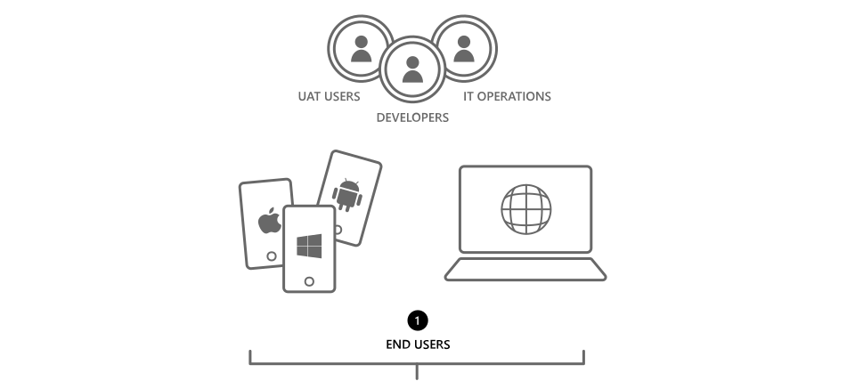

Container-based application architectures in Microsoft Azure
From Docker extensions for virtual machines to Azure Container Service, Microsoft Azure offers open flexibility in your container journey.
Solution brief
Microsoft Azure provides an end-to-end solution for building and deploying Linux and open source applications with Docker containers. With Azure, you can build a platform for both your web and mobile applications. This solution, along with various Azure services, can help you build your own robust and scalable PaaS application platform on top of your infrastructure as a service (IaaS).
The industry is beginning to move beyond the traditional model of application development and deployment to a cloud-based application approach characterized by easy packaging and unique deployment. This is beneficial whether you’re deploying an existing application to the cloud, integrating with cloud services, or building an application in the cloud. In application deployment, Linux containers are the next level of the virtualized platform approach. Containers are one step ahead of traditional virtual machines in their ability to isolate data and compute on shared resources. Containers can approximate the capabilities of a virtual machine by using kernel containment, rather than simulating and running a separate kernel with every virtual machine. Docker-based containers can help you in application deployment environments that require rapid provisioning. They can also help you securely isolate applications deployed on the same Docker host.
Microsoft Azure provides you with a platform to build cloud-based distributable and scalable applications, without the need to manage a complex infrastructure deployment. With Azure, you can create lightweight, private platform-as-a-service (PaaS) environments and automate the packaging and deployment of applications with Docker-based containers. Additionally, Azure gives you the ability to simplify the deployment of Docker Engine and manage remote communication with virtual machines using Docker Virtual Machine Extension.
OVERVIEW
This scenario focuses on how Azure supports Linux and open source applications with Docker containers. Regardless of your Docker needs or readiness level, Azure has an offering for you.
- Network Tier
- Azure ExpressRoute
- Azure VPN
- Azure Domain Name System
- Application Gateway
- Content Delivery Network (CDN)
- Azure Load Balancer
- Azure Traffic Manager
Network Tier
The Azure network tier includes high-performance network services for your applications. These network services provide different functionalities for applications, from secure access, name resolution, and content delivery to traffic management and load balancing. The following Azure services can be used with your applications.
Azure ExpressRoute
This service establishes a connection between your on-premises datacenter and Azure, without going over the public Internet. To configure ExpressRoute:
- Gather information about connectivity providers and locations
- Access your Azure subscription
- Create an ExpressRoute circuit
- Configure routing (circuit peering)
- Link a VNet to an ExpressRoute circuit
For more information: ExpressRoute circuits and routing domains
Azure VPN
With Azure VPN Gateway, you can configure site-to-site and point-to-site VPN connections. Site-to-site VPN connections require a VPN device or routing and remote access service (RRAS).
To configure an Azure VPN gateway and create a VPN connection over IPsec (IKE v1 and IKE v2):
- Create a VPN gateway using the Microsoft Azure portal
- Gather information for your VPN device configuration
- Configure your VPN device
- Verify your local network ranges and VPN gateway IP address
For more information: Configuring a VPN gateway in the Azure Classic Portal
Azure Domain Name System
Accessing a web application requires name resolution from a web address to an IP address. Domain Name System (DNS) domains in Azure are hosted on the Azure global network of DNS name servers. For faster performance and higher availability for your domain, DNS queries are answered by the closest available DNS server. By hosting your domains on Azure, you can manage your DNS records using the same credentials, APIs, tools, and billing as your other Azure services.
For more information: Azure DNS
To configure Azure DNS for your application using the Azure Command-Line Interface (Azure CLI) or Windows PowerShell:
- Switch the Azure CLI to use Azure Resource Manager (ARM) commands and DNS
- Create DNS zones
- Create records and record sets
- Delegate your domain to Azure DNS
For more information: Get started with Azure DNS using CLI
To create and add record sets to a DNS zone within Azure DNS: Azure Resource Manager template
Application Gateway
Microsoft Azure Application Gateway provides an Azure-managed HTTP load-balancing solution based on layer-7 load balancing. Application load balancing enables IT administrators and developers to create routing rules for network traffic based on HTTP. Azure Application Gateway currently supports layer-7 application delivery for HTTP load balancing, cookie-based session affinity, and Secure Sockets Layer (SSL) offload.
For more information: Application Gateway
To create an application gateway:
- Create an application gateway resource
- Create a configuration XML file or a configuration object
- Commit the configuration to the newly created application gateway resource
- Start the gateway and verify the gateway status
For more details: Application Gateway
Azure Content Delivery Network
Since your application users can be based in different geographical locations, it’s important to provide maximum bandwidth and lower latency for delivering content. To optimize the performance and user experience of end users who are far from the content source, Azure Content Delivery Network provides a wide range of physical nodes (point of presence, or POP) across the globe to deliver high-bandwidth content with lower latencies by caching web content. Enable the Azure Content Delivery Network from your application to cache your web content, such as images, scripts, and stylesheets. Azure Cloud Services (including Azure Storage, web and mobile app services, and other HTTP and HTTPS endpoints with a custom domain name) can be integrated with Azure Content Delivery Network for caching and delivering content.
For more information: Azure Content Delivery Network
To configure Azure Content Delivery Network to improve the reach and performance of your web application:
- Create a storage account
- Create a content delivery network linked to the storage account
- Create a blob container in your storage account
- Upload content to your blob container
- Link to the content you uploaded using the URL of the content delivery network URL in your application
For more information: How to serve content from Azure CDN in your web application
To create an Azure Content Delivery Network profile/endpoint with a user-specified origin and commonly used settings: Azure Resource Manager template
Azure Load Balancer
Azure Load Balancer configures incoming Internet and intranet traffic load balancing to Azure Virtual Machines.
To configure Azure Load Balancer:
- Create the load-balancer set
- Add virtual machines to the load-balancer set
- Configure the distribution mode for the load balancer
- Check the health status of the load balance
For more information: Load balancing for Azure infrastructure services
To create a load balancer with Inbound NAT Rule: Azure Resource Manager template
Azure Traffic Manager
Azure Traffic Manager provides three different traffic-routing methods to choose from: failover, performance, or weighted round robin.
To configure Traffic Manager:
- Create a Traffic Manager profile
- Add endpoints that will be part of the Traffic Manager profile
- Configure the Traffic Manager routing method:
- a. Failover routing
- b. Performance routing
- c. Round-robin routing
- Point your application domain name to a Traffic Manager domain name
For more information: Traffic Manager
To create an Azure Traffic Manager profile and load-balance across multiple virtual machines: Azure Resource Manager template

- Network Tier
- DNS
- Application Gateway
- CDN
- Azure Load Balancer
- Traffic Manager
- Identity Tier
Identity Tier
Managing identity for an application in the cloud is as important as it is on-premises. Azure supports several cloud identities that can be used with your application. You can use your own identity capabilities for an application or integrate Azure Active Directory or Azure Active Directory Access Control to let users log on using identities from Facebook, Google, Microsoft, and other identity providers.
For more information: Fundamentals of Azure identity management
To configure Azure Active Directory and extend your user identity and application access to the cloud:
- Create a new Azure Active Directory
- Add and verify a custom domain
- Add a user to the custom domain or sync your on-premises identities to Azure AD Connect
- Configure authentication/authorization for the web app
- Confirm/grant user access to the app
- Modify the app to accept a security token, if required
For more information: Integrating your on-premises identities with Azure Active Directory
- Web Tier
- Azure Mobile Apps
- Azure Web Apps
Web Tier
The application front-end, such as web and mobile services, is a critical part of any application that provides a user interface. Azure provides a platform for rapidly building and hosting secure mission-critical web and mobile applications on highly available and scalable global datacenter infrastructure.
Azure Mobile Apps
Apart from browser-based web applications, organizations also need native mobile apps for their applications. With the Mobile Apps feature of Azure App Service, it’s easy to rapidly build engaging cross-platform and native apps for iOS, Android, Windows, and Mac or cross-platform Xamarin or Cordova (PhoneGap) apps. The Mobile Apps feature lets you add your custom backend logic in C# or Node.js.
For more information: Mobile Apps
To configure Mobile Apps for native mobile apps with multiple platforms:
- Create a new mobile service
- Create a mobile app (you can create mobile apps for iOS, Android, Windows, Xamarin Android, and Xamarin iOS)
- hAdd authentication for your mobile service app with different authentication providers, including Google, Facebook, Twitter, Microsoft, and Azure Active Directory
- Add push notifications to your mobile services app
- Test the app against the local mobile service
- Publish your mobile service
- Test the app against the mobile service hosted on Azure
For more information: Getting started with Mobile Services
Azure Web Apps
Azure App Service is a fully managed cloud platform that enables developers to rapidly build, deploy, and manage business-critical applications built on .NET, Node.js, PHP, Python, and Java. With Azure, you have a larger selection of supported web development platforms, including WordPress, Umbraco, Joomla, and Drupal. The Web Apps feature lets you set up continuous integration and deployment workflows with Microsoft Visual Studio Online, GitHub, TeamCity, Hudson, or Bitbucket—to automatically build, test, and deploy your web app on each successful code check-in or integration test.
For more information: Web Apps
To configure a web app to deploy web servers for your open source application:
- Set up the development environment for PHP using Git
- Create a web app and set up Git publishing
- Get information on your remote MySQL connection
- Build and test your app locally
- Publish your app
- Publish changes to your app
Note: The Web Apps feature lets you create your web application with Node.js, Java, PHP-Git, PHP-FTP, and Python. Creating a web app with Azure using these languages requires different configuration steps.
For more information: Creating a PHP-MySQL web app in Azure App Service and deploying using Git
To create a WordPress deployment using MySQL replication cluster: Azure Resource Manager template
- Application Tier
- Azure Automation
- Azure Search
- Azure Service Bus
- Azure Mobile Engagement
- Azure DocumentDB
- Azure Redis Cache
- Azure Notification Hubs
- Database Tier
Application Tier
For your business-critical application, application servers with business logic can run on a service tier. A service tier can be provisioned with a set of Azure services, including private platform as a service (PaaS) and app fabric to build and deploy cloud-ready and loosely coupled applications. With Azure Docker VM Extension, you can provision PaaS over infrastructure as a service (IaaS). Build your app as cloud-ready by leveraging Azure services. Azure Managed Services lets you build loosely coupled applications that provide increased flexibility and agility.
Azure Automation
Microsoft Azure Automation provides a way for users to automate the manual, long-running, error-prone, and frequently repeated tasks that are commonly performed in a cloud and enterprise environment. You can automate processes using runbooks or automate configuration management using Desired State Configuration (DSC).
For more information: Azure Automation
To create an Azure Automation runbook to automate tasks:
- Go to your Azure subscription
- Create an automation account as a container for your Azure Automation resources
- Use the credential in a runbook
- Create a new runbook
- Add activities to the runbook to define Write-Output, parameters, InputObjects, and expressions
- Test, publish, and start the runbook
- Add authentication to manage Azure resources, which lets you manage Azure resources
More information: Azure Runbook
Azure Search
Applications use search as the primary interaction pattern for their users. Users want great relevance, suggestions, and solid linguistics that effortlessly handle spelling errors, near-instantaneous responses, multiple languages, faceting, and more. The Azure Search service is a fully managed, hosted cloud search service that allows developers to build rich search applications using a .NET SDK or REST APIs. It includes full-text search scoped over your content, plus advanced search behaviors similar to those found in commercial web search engines, such as type-ahead query suggestions based on a partial term input, hit-highlighting, and faceted navigation.
For more information: Azure Search
To configure a fully managed Azure Search service for your application:
- Add Azure Search to your subscription
- Add a standard tier search service to get dedicated resources
- Find the service name and API keys of your Azure Search service
- Test service operations
For more information: Creating an Azure Search service in the Azure classic portal
Azure Service Bus
Applications or services that run in the cloud often need to interact with other applications and services. Azure Service Bus provides a broadly useful way to do this. This generic, cloud-based messaging system will connect to just about anything—applications, services, and devices—wherever they are. Queues offer simple first-in, first-out guaranteed message delivery and support a range of standard protocols (REST, AMQP, WS) and APIs.
For more information: Azure Service Bus
To configure Azure Service Bus so that your application interacts with other applications or services:
- Create a service namespace
- Obtain the default management credentials for the namespace
- Create an application for Java, Node.js, PHP, or Python
- Configure your application to use Azure Service Bus
- Set up a connection to Azure Service Bus
- Create a queue and send messages to the queue
- Receive messages from the queue
Note: Configuring Azure Service Bus for different languages requires different configuration steps.
For more information: Service Bus
Azure Mobile Engagement
Trigger engagement scenarios according to app-user behavior and demographics by combining big-data collection with real-time processing. Azure Mobile Engagement, delivered as software as a service (SaaS), is a data-driven user engagement platform that enables real-time fine-grain user segmentation, app user analytics, and contextually aware smart-push notifications and in-app messaging across all connected devices. With open APIs and ease of integration you can use existing data from customer relationship management systems, content management systems, and other business-related systems.
For more information: Azure Mobile Engagement
To configure Azure Mobile Engagement:
- Go to your Azure subscription
- Set up Azure Mobile Engagement for your mobile app
- Connect your mobile app to the Azure Mobile Engagement backend
- Enable real-time monitoring
- Connect your app with real-time monitoring
- Enable push notification and in-app messaging
- Send notification to your app
For more information: Get started with Azure Mobile Engagement for iOS apps in Objective C
Azure DocumentDB
Applications produce, consume, and respond quickly to large volumes of data. These applications evolve rapidly and so does the underlying data schema. DocumentDB is a true schema-free NoSQL document database service designed for modern mobile and web applications. DocumentDB delivers consistently fast reads and writes, schema flexibility, and the ability to easily scale a database up and down on demand.
DocumentDB enables complex ad-hoc queries using the SQL language, supports well-defined consistency levels, and offers JavaScript language integration and multi-document transaction processing using the familiar programming model of stored procedures, triggers, and user-defined functions (UDFs). DocumentDB natively supports JSON documents, enabling easy iterations of application schemas. It embraces the ubiquity of JSON and JavaScript, eliminating the mismatch between applications.
To configure Azure DocumentDB for a true schema-free NoSQL document database service for your application:
- Create a DocumentDB account
- Set up your Node.js application
- Set your app configurations
- Connect to a DocumentDB account
- Create a node database and collection
- Create a document
- Query DocumentDB resources
- Delete the node database
- Put it together and run your Node.js application
Note: Azure DocumentDB exposes resources through a REST API that can be called with any language capable of making HTTP/HTTPS requests.
For more information: DocumentDB and Introduction to DocumentDB
To create a DocumentDB account with the specified name and a default consistency level of session: Azure Resource Manager template
Azure Redis Cache
Azure Redis Cache helps your application become more responsive even as user load increases. It leverages the low latency, high-throughput capabilities of the Redis engine. This separate, distributed cache layer allows your data tier to scale independently for more efficient use of compute resources in your application layer.
Redis is an advanced key-value store in which keys can contain data structures such as strings, hashes, lists, sets, and sorted sets. Redis supports a set of atomic operations on these data types. Azure enables you to use Redis Cache with different web development languages and platforms, including .Net, Node.js, Java, Python, PHP, and WordPress. Configuring different languages on Azure Redis Cache requires different configuration steps.
For more information: Azure Redis Cache
To configure Azure Redis Cache and make your application more responsive:
- Go to your Azure subscription
- Create a Redis cache on Azure
- Enable the non-SSL endpoint
- Add and retrieve objects from the cache
For more information: Azure Redis Cache
To create a Redis Cache: Azure Resource Manager template
Azure Notification Hub
Notification services are used to alert users when any specific event takes place. Azure Notification Hubs provide an easy-to-use infrastructure that enables you to send mobile push notifications through platform-specific infrastructures called platform notification systems (PNS) from any backend (in the cloud or on-premises) to any mobile platform. The Azure notification service works with different mobile platforms such as iOS, Android, Windows Universal, Windows Phone, Kindle, Xamarin iOS, and Xamarin Android.
For more information: Notification Hubs Overview
To configure Azure Notification Hubs to send notifications to different mobile platforms:
- Register your app for Azure Notification Hubs
- Configure your notification hub
- Connect your app with your notification hub
- Send notifications
Note: With Azure Notification Hubs, you can configure notification services with different mobile platforms, including Windows Runtime 8.1 Universal, Windows Phone Silverlight 8.x, iOS, Android, Kindle, Baidu, Android, Xamarin Android, Xamarin iOS, and Google Chrome. Different mobile platforms require different configuration steps.
For more information: Getting started with Notification Hubs for Windows Store Apps
Database Tier
Your application may use structured databases that can contain any type of data, including an image gallery, any type of list, or any other type of business application data. Azure provides preconfigured virtual machine images for different open source structure databases such as MySQL, MariaDB, PostgreSQL, and SQLite. With preconfigured virtual machine images for open source relational databases, you can develop your development and test environment and leverage your skillset over Azure infrastructure. This Azure solution gives you the flexibility of cloud infrastructure and allows you to build a database tier with minimum compute resources and the ability to scale up or down anytime to meet changing requirements.
Different approaches are available to deploy database servers with high availability. A multi-master cluster or traditional master slave cluster can be created to deploy a robust, scalable, and reliable database tier for your application on Azure Virtual Machines.
For more information: How to create a MySQL database in Azure and MariaDB (MySQL) cluster Azure
To deploy databases for your application on Azure Virtual Machines using a pre-built database virtual machine image from Azure Marketplace (or you can deploy manually on a base Linux virtual machine):
- Go to your Azure subscription
- Select a pre-built database virtual machine image from Azure Marketplace or a base Linux virtual machine
- Create a virtual machine with required instance types
- Configure the database for your application
For more information: Creating a virtual machine running Windows in the Azure portal
- Management Tier
- Azure management tools
- Operational Insights
- Docker management tools
Management Tier
Applications sent on platform as a service (PaaS) over infrastructure as a service (IaaS) using Docker on Azure and other Azure services have a wide range of management tools to manage Azure resources, applications, and Linux with Docker. These management tools provide you with a simplified way to manage both your applications running on open source as well as your development and test environment on Azure infrastructure.
Azure management tools
Microsoft provides Azure management tools for many types of requirements and skill sets, including the following:
- Azure portal: Build, manage, and monitor everything from simple web apps to complex cloud applications in a single, unified console.
- Azure CLI: Azure CLI provides a set of open-source, shell-based commands to create and manage resources in Azure.
- Azure Resource Manager: Azure Resource Manager lets you work with the resources in your solution as a group. You can deploy, update, or delete all resources for your solution in a single, coordinated operation.
- Rest APIs: Azure API management provides a REST API for performing operations on selected entities, such as users, groups, products, and subscriptions.
- SDKs: Azure provides multiple language-specific SDKs to manage your Linux environment. These languages include .NET, Java, Node.js, PHP, Python, and Ruby.
Operational Insights
Operational Insights, part of Microsoft Operations Management Suite for Linux, provides an easy-to-install agent for Linux that allows you to collect syslog events, performance metrics, and container data for log analytics.
For more information: Operations Manager Engineering
To install OMS agent for Linux:
- On the OMS Overview page, click the Settings tile to open the Settings page
- Under Connected Sources, click Download Agent for Linux to go to the Operations Management Suite Agent for Linux page on GitHub and download the OMS Agent for Linux
- From the Operations Management Suite Agent for Linux page, on the GitHub website, download the appropriate bundle: x86 or x64
- Install the bundle using the –install argument; if you're upgrading, use the –upgrade argument
-
To install and onboard directly, use the following command:
> sudo sh ./omsagent-1.0.0-47.universal.x86.sh –install –w-s -
To install and onboard directly, use the following command (this process works for both 64-bit and 32-bit kits, with a 32-bit kit shown below):
> sudo sh ./omsagent-1.0.0-47.universal.x86.sh –install -
To extract the agent packages from the bundle without installing them, use the following command:
> sudo sh ./omsagent-1.0.0-47.universal.x86.sh –extract
For more information: Connect Linux computers to OMS
Docker management tools
To simplify Docker management, use the following Docker and third-party tools:
- Docker Machines: Docker Machines allows you to automatically create host machines and install Docker Engine on them. You can also configure a Docker client on the host.
- Docker SWARM: Docker Swarm provides native clustering for multiple Docker hosts. Using a full suite of Docker tools, you can create and access Docker pools.
- Docker Compose: Docker Compose is a tool to define and run multi-container Docker applications. A Compose file can help configure your application’s services.
- Kubernetes: Kubernetes allows you to manage a cluster of Docker-based Linux containers as a single system to accelerate development and simplify IT operations.
- Apache Mesos: Mesos supports the launch of tasks that contain Docker images. You can either launch a Docker image as a task or an executor.